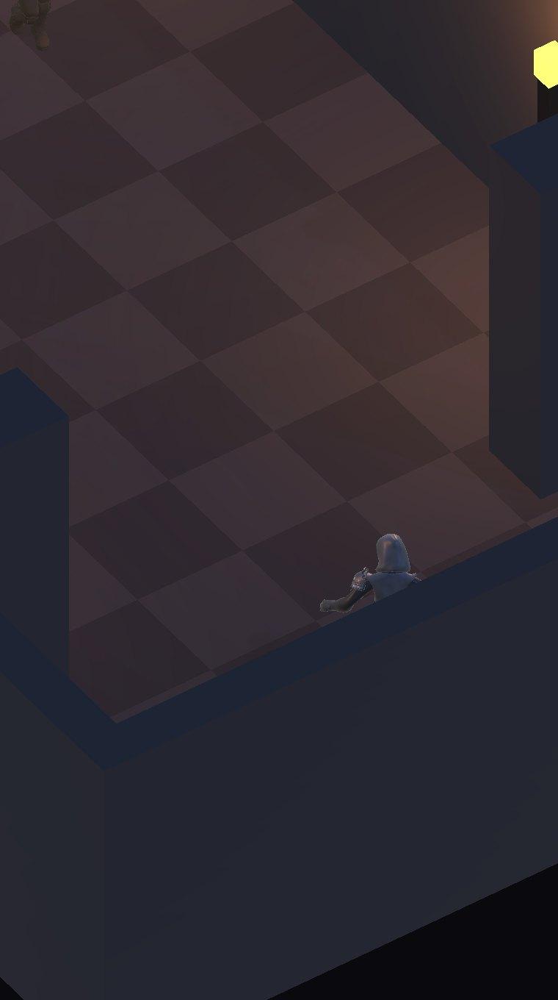
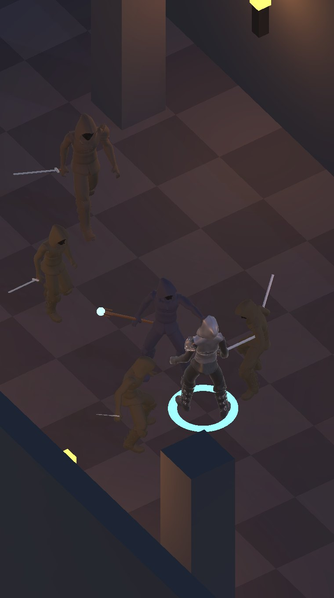
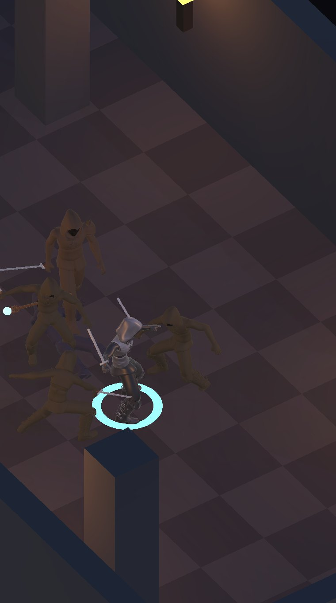
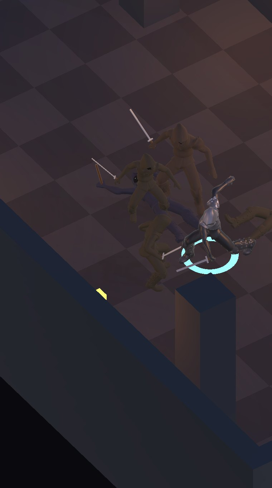
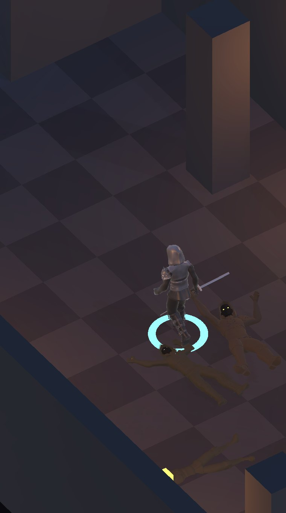
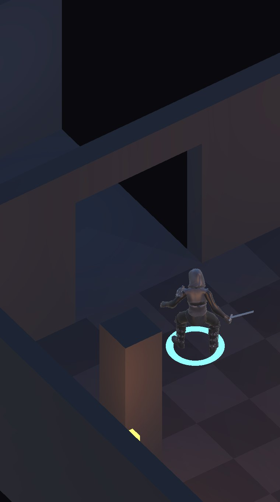
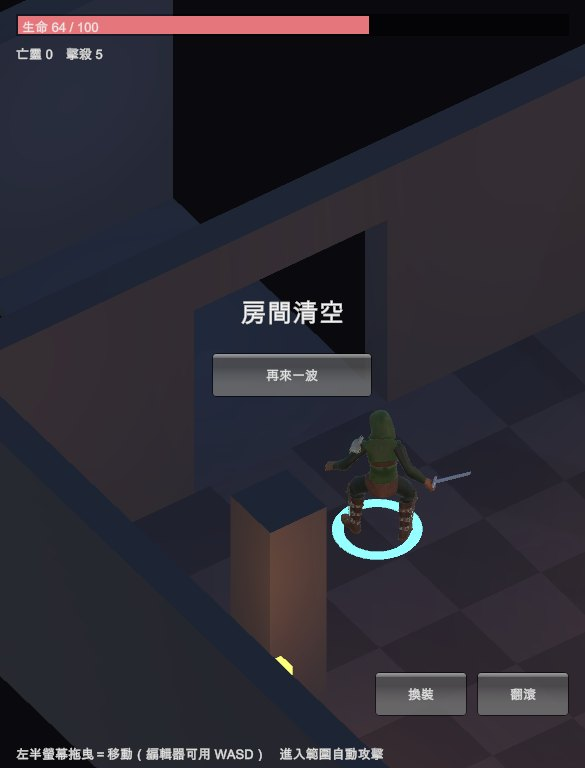

地城迴響 · Demo 第一版
等距視角、縱長房間、火把光源、自動攻擊、虛擬搖桿、換裝。 全部程序化生成，零美術素材，$0。
這是「看得出雛形」的切片，不是可玩的遊戲。沒有技能樹、裝備掉落、 詞綴、存檔、程序生成的樓層、音效與配樂。這些都在規劃稿裡，但不在這一版。







驗證流程走真實的遊戲路徑：模擬輸入灌進搖桿的方向向量再經過同一套移動邏輯， 不是直接推 transform；攻擊完全不碰，讓自動攻擊自己觸發。
| 時間 | 玩家 Z | 生命 | 存活亡靈 | 擊殺 |
|---|---|---|---|---|
| 0.4s 入口 | −6.0 | 100 | 5 | 0 |
| 3.6s 接敵 | −0.9 | 82 | 5 | 0 |
| 5.0s 混戰 | −0.9 | 73 | 3 | 2 |
| 7.6s 尾聲 | −0.9 | 64 | 1 | 4 |
| 9.4s 清空 | 1.8 | 64 | 0 | 5 |
推進到清場約 9 秒，比規劃稿設想的「每個房間 40～60 秒」快很多。 那是因為 Demo 只放 5 隻、玩家傷害調得高——正式版靠敵人數量與血量拉長， 不是靠削弱玩家。
第一版讓玩家穿全套戰士板甲＋兜帽，亡靈也是戰士板甲＋兜帽。這是「共用同一套 模組件」的直接後果——那正是紙娃娃系統的優點，也是它的陷阱。截圖出來我自己 都分不出哪個是玩家。
修法是兩層：亡靈改鏽蝕暗甲（低金屬度 0.15、低光澤 0.12，對比玩家的 0.45/0.55）。這不只是配色——亮鋼會反光搶眼，鏽甲才會沉進背景讓玩家跳出來。 再加玩家腳下的青色指示環，混戰中不會看丟。
8×16 的格狀地板原本每格一個 GameObject。在手機上那是白白丟掉的效能， 而且正式版接程序生成之後每層好幾個房間，這個數字會爆掉。 改成把同色格子合併成一個 mesh，128 → 2 次 draw call。
讀起來像畫面破洞，不像「還有路可以往下走」。補了一盞冷色暗光。
CreatePrimitive
帶的 collider 全部刪掉。開物理引擎只是白白吃記憶體與初始化時間。unavailable 狀態。
Xcode 專案已經產得出來（batchmode 14 秒），接上手機就能跑。